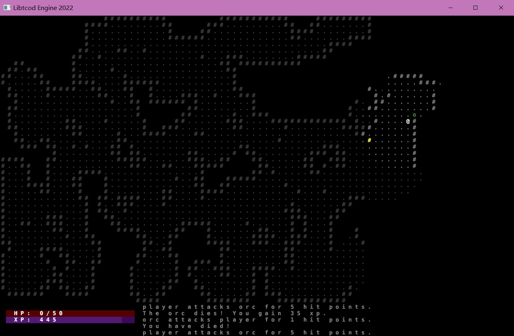
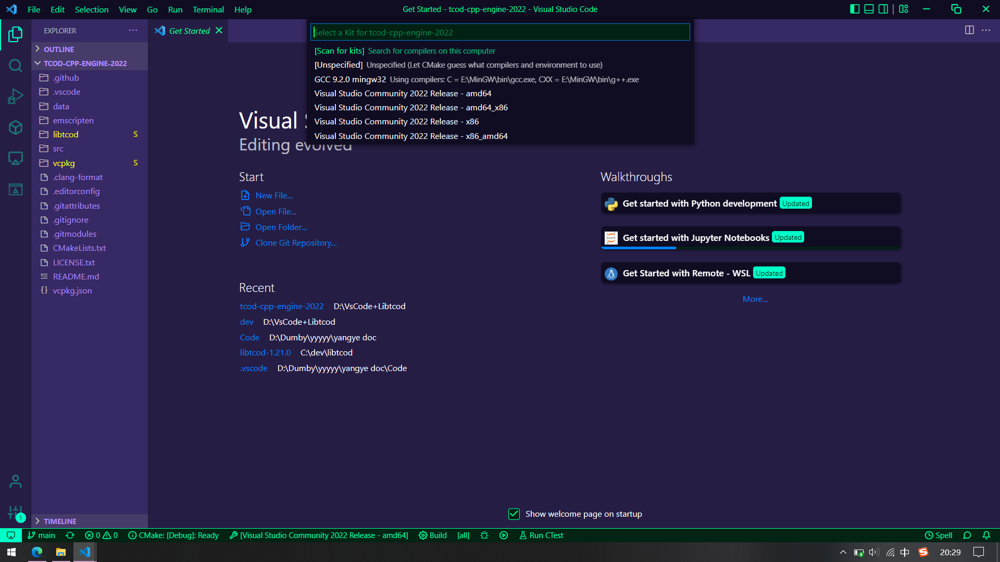

Roguelike学习笔记一：LibTCod
学习一下传统Roguelike游戏制作引擎 LibTCod。
折腾了好久好久，怎么都跑不起来libtcod，真tm太曹丹了。。
直到我看到这个叫做TCod Cpp Engine的项目（最近官方出了个模板，配置过程与下面类似，两者都可使用），最后跟着介绍的步骤终于跑起来了。

配置
先要有一些基本工具：VsCode、Cmake，对了，最好再载一下VS（这里用VS2022），因为后面vcpkg使用时要求有VS实例。
然后把这个库克隆到本地（注意是克隆不是直接复制，用git克隆后面可以免去很多乱七八糟的步骤）。
这里我将库直接克隆到D盘下。（项目主目录为 D:\tcod-cpp-engine-2022）
开始初始化LibTCod和Vcpkg两个子模块。
子模块是什么具体看官方文档，这里不多说。
我们注意到克隆下来的文件夹中有两个空的文件夹：libtcod和vcpkg，这两个就是两个子模块的文件夹。
接下来在项目的文件夹下（D:\tcod-cpp-engine-2022）运行命令：
1 | git submodule update --init --recursive |
然后就完成了子模块的初始化。
这里如果有什么报错之类的通常都是网络不行，多试几次就行了。
注意子模块一定要正确初始化，刚那两个文件夹有一个空的都会导致编译失败。
接下来打开VsCode，点击打开文件夹，打开项目的主目录（D:\tcod-cpp-engine-2022）。
如果你没有下载扩展的话会让你载一些，把VsCode推荐的扩展全都载下来就好了，其中最重要的是这几个：C/C++相关扩展、CMake工具。
VsCode还会提示你选择Kit，这里Win10的话最好选amd64，如果没提示的话可以到底部找到Kit选项打开并选择。

最后按 F5，VsCode会自动进行编译。
这样应该就行了，他会跳出一个该项目原作者的一个示例，能运行就说明配置成功。
参考：
- @HexDecimal 大佬的项目 Libtcod C++ engine 2022
- LibTCod 官方模板